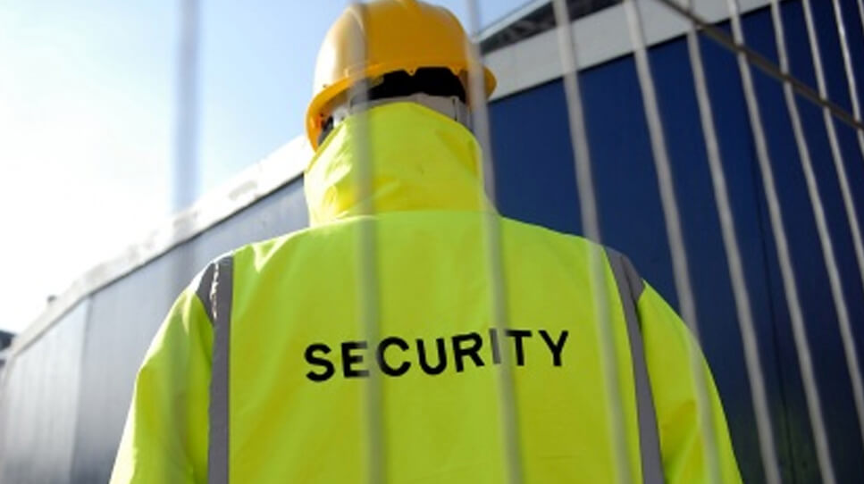
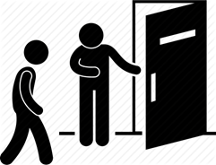
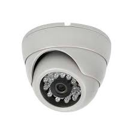

What Are the Biggest Security Threats to Businesses?

Now, as businesses are restarting on-site work, this means that it’s time to think about physical security again.With that in mind, here is a quick rundown of the main security threats and how to deal with them.
Vandalism
From a security perspective, the main problem with vandalism is that it can create opportunities for more serious criminals.For example, if a vandal smashes a window, then a burglar can get in.
The good news is that vandalism is only rarely targeted destruction.Most of the time, it’s just mindless stupidity.The fact that it’s mindless means that CCTV can be of limited use as a deterrent.Instead, you generally want to use old-fashioned physical barriers.
If possible, invest in a security fence or wall around your property.This in itself can make it more hassle than it’s worth for vandals.If that’s not possible (and maybe even if it is) use metal security doors and shutters.
These will go a long way to stopping vandals from breaking doors and windows.You might also want to consider installing CCTV cameras behind a grille.
What security doors and shutters won’t stop is graffiti.This might not sound like a security threat but it can be used as cover for criminals leaving messages.Ideally, you’ll have graffiti washed off as soon as possible.
This can, however, get expensive, for that reason you may wish to invest in additional security measure to prevent people from accessing a site or making it harder to reach certain exterior walls of your business.
Arson
There’s a strong case for arguing that arson is basically just a specific form of vandalism.It is, however, distinct enough, and dangerous enough to warrant its own special mention.The problem with arson is that the act of setting a small fire can, literally, end up burning down a building – and whatever or whoever is inside it.
Now, to be fair, there is a distinct likelihood that the fire brigade will manage to put a stop to the fire long before it gets anywhere near this stage.You do not, however, want to leave yourself totally reliant on this if you can help it.What’s more, if the fire brigade does have to get involved, they will probably end up doing quite a bit of damage with their equipment.
In short, in addition to all the obvious security threats arson poses, it can end up being really expensive.The good news is that the steps you take to protect yourself against regular vandalism can also go a long way to protecting you against arson.It is, however, advisable to take your measures a little further.
Firstly, you want to do everything possible to deny arsonists easy fuel.For example, make sure any letter is safely kept somewhere inaccessible.This goes at least double for anything which is easily flammable.
Secondly, you want a robust fire alarm, preferably linked directly to the fire service.Thirdly, you want CCTV focused on any vulnerable areas.
Burglary and theft
Burglary is when someone enters your property illegally in order to steal from it.Theft is when a person steals without either illegal entry or the use of force.Both are security issues for most businesses.In blunt terms, burglary tends to be perpetrated by third parties and theft by employees – but this can be avoided when avoiding certain security mistakes.
Your first line of defence is, quite simply, to minimize the number of valuables you keep on the premises.For completeness, this includes data.It may be digital, but somewhere along the line, it resides on a physical storage device.Therefore, you need to take physical security measures to protect it (or make sure that someone else does).
If you do keep valuables on the premises, keep them out of sight but in mind.In other words, keep them in secure storage and have a clear inventory of exactly what should be exactly where.Make sure everything you store is well organized and that people can move about storage areas without bumping into each other.
Whenever possible, mark your valuables in some way and always keep clear records of their details (e.g. serial numbers).Keep any relevant documentation separate from the items themselves.
You may want to implement CCTV and/or random bag/locker searches.If you do, however, make sure that these actions are proportionate to the risk.
Workplace violence
Workplace violence tends to be perpetrated by third parties such as customers.That said, it’s not unheard of for it to be perpetrated by employees.In either case, the best approach to dealing with it is to set clear expectations about acceptable and unacceptable behaviour.
Then use vigilance to spot instances where these expectations are not being met and act promptly to de-escalate them.CCTV can be very useful as a deterrent and as a source of evidence if they do occur.
Terrorism
In the UK, the general risk of terrorism is very low.That said, there is a difference between low and none.What’s more, the overall impact of terrorism can be so great that it arguably still qualifies as a major security threat.
There are two main ways a business could be impacted by terrorism.One is by direct attack or, and probably more likely, as collateral damage from a direct attack.
The other is by unknowingly facilitating terrorist activity.This might happen as a result of being duped, persuaded or coerced into 'bending the rules' in some way.
The bad news is that there is very little the average business can do specifically to protect itself against terrorist attacks.That said, any business practising effective all-round security is likely to make itself as safe as it possibly can be.The good news is that there is a lot businesses can do to prevent themselves from becoming 'mules' for terrorist activity.
Quite simply, you need to inform yourself of the rules around whatever you do.Then you need to communicate them to your employees and stick to them.If you get any suspicion that these rules have been broken, for whatever reason, then you need to investigate.You may need to report the matter to the police.
Share on Facebook Tweet Follow us
Posted On: 2021-05-14T00:00:00
Posted By: working the doors





Content Date: 2021-05-14
Download Date: 2021-07-09
Document ID: L0C04DYR6